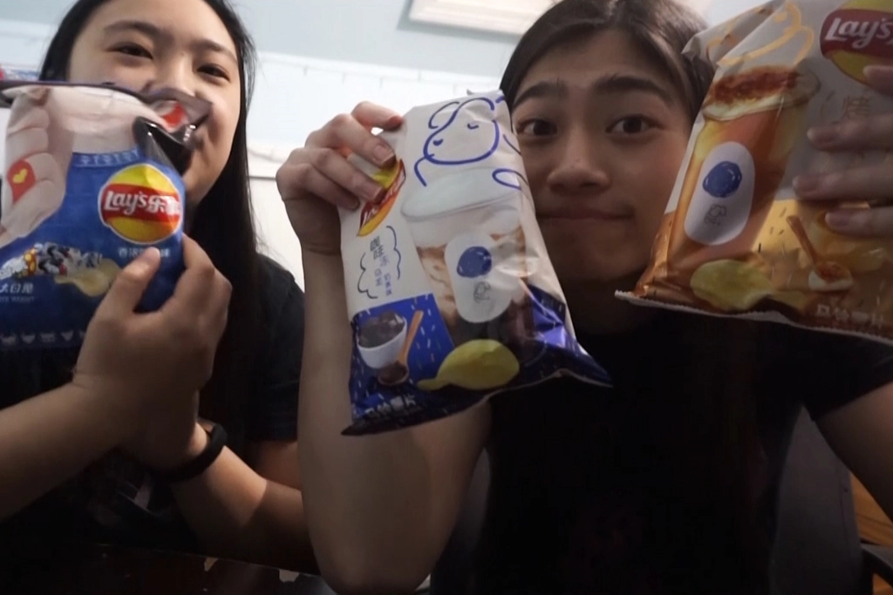

Boba Snack Taste Test
Jan 14 - Written by Bonnie and Emily
Have you ever wandered through the snack aisle and wondered what all of the unusual chips and snacks taste like? Well, we took our love for boba and gathered all the boba snacks we could find so you wouldn’t have to.
Who knew there were so many boba flavored snacks that were just overflowing at the supermarket? Of course we had to pick up a wide variety to try from boba flavored chips to biscuits and even DIY boba on the go.
Biscuits/Other
Tapioca Biscuits
These individually packaged biscuits are great for an on the go snack and have just the right amount of sweetness to tackle that midday sweet tooth. The boba flavor is lacking a bit as you get more of a sweet and buttery biscuit flavor, and the cream filling isn’t overly sweet making this a great option to pair with a nice cup of tea or even better, some boba.
Boba Milk Tea Grains Snack
This snack appears to be a combination of tapioca, cookie, and nougat. It’s squishy to the touch and taste as it appears, squishy and chewy. Out of all the snacks we tried, this snack was by far the best in regard to tasting like boba. It had all of the elements, the tapioca and the tea flavor, and was the right amount of sweetness. Since it also has so many layers of different components from cookie to nougat, it provides a great mix of texture that keeps you wanting more. If you’re into chewy snacks and are looking for a solid boba flavored one, this is the one for you.
Bubble Milk Tea Mochi
You can’t go wrong with mochi so we had high hopes for this one but was disappointed by the lack of boba flavoring. The mochi was nice and soft like mochi should be; however, there was just a lack of flavor. The most prominent taste was flavors of sweetness and rice flour that is used to make the outer layer which was disappointing despite their great job at really showing the distinct layers in the filling that was supposed to be the separate flavors of tapioca and milk tea.
Chips
Moving onto all of the chips, we didn’t have high expectations for these as they all sounded delicious for what the flavor is but not so much in potato chip form.
Creme Brulee Milk Tea Chips
In Emily’s opinion, this one is just an all around confusion of flavors. As someone who hasn’t had creme brûlée before, Emily didn’t have much to compare this chip to but as someone who doesn’t like sweet potato chips, she was already at a predisposition to not liking these. These chips had a very strong sweet smell and the taste was just as overwhelming making this a very hard chip to give words for. All Emily can say is, you’ll have to try this one out for yourself.
Bonnie on the other hand, thought that this chip did certainly have a resemblance to creme brulee at the first bite, having had an actual creme brulee before. But, all the flavors that happened after were similar to Emily--a confusion of flavors. There were hints of potato flavors and also a taste in between salty and sweet that you can’t really describe well with words. All in all though this was an interesting flavor to try that Bonnie also suggests that you’ve gotta try it yourself to really understand what we mean by “confusion of flavors”.
Coffee Jelly Milk Tea Chips
Just opening this bag sends you a whiff of something resembling coffee but a little off which is likely where the milk tea comes in. These chips had more of a potato taste to them than the creme brulee milk tea chip which is good considering it's a potato chip. However, do you typically taste potato when you eat potato chips? That’s the real question. These coffee jelly milk tea chips definitely give you the feel of coffee but the smell of coffee is stronger than the taste. In comparison to the creme brulee milk tea chip, the flavors are more balanced providing a less confusing combination of flavors in your mouth thus a better tasting chip. It does have a coffee flavor at its first bite and the rest to follow is not quite so bad either. There's potato flavors and also a slight hint of tea as an aftertaste that doesn’t make this combination a terrible choice to have as a chip flavor.
White Rabbit Candy Chips
This one isn’t boba flavored; however, we think it being a milk candy makes it a valid exception in this mix. Having heard mixed feelings about this chip prior to trying it ourselves, we had low expectations for it so when we tried it, we were thoroughly surprised. According to Bonnie, this chip is the equivalent of what milk foam tastes like, thus making it more relevant in this boba snack taste test. Its initial milky flavor, that is quite strong at first bite really brings out that white rabbit candy flavor but when you continue eating it, the mix with a little bit of salt turns this chip flavor combination into that sip of cheese foam milk tea when the two parts fuse together to create a creamy, salty, and sweet concoction. Bonnie thinks this chip flavor gotta change its name from White Rabbit to Cheese Foam!
Drinks
Both the drinks we had were Shake Milk Teas by Fruit Meet Tea. The first one we tried was the Roasted Sweet Milk Tea which was really good despite us not following instructions and preparing it improperly resulting in very little tea flavor. However, after giving the drink some time to “cold brew”, the end result was quite yummy. If we had prepared it properly the first time, this one would have been even better but regardless, it contained some good milk.
The second flavor we tried was the four seasons milk tea. This one was prepared according to the instructions so there was a stronger tea flavor and was surprisingly good for an instant milk tea. Since we also tried it while it was hot, we concluded that this milk tea was just as good hot or cold and did contain a lot of that tea flavor that we were missing in the first roasted oolong milk tea we had tried.
If you’re looking for some good milk tea on the go or for those days you want to save money on boba, definitely check these teas out. We highly recommend them, hot or cold, they are the perfect drink to bring around with you on your daily commute. Plus, if you make it hot, it makes for the perfect hand warmer on a cold winter day.
Overall Snack Rating
- Shake Milk Tea: Four Seasons Milk Tea
- Shake Milk Tea: Roasted Sweet Milk Tea
- Boba Milk Tea Grains Snack
- Tapioca Biscuits
- Bubble Milk Tea Mochi
- White Rabbit Candy Chips
- Coffee Jelly Milk Tea Chips
- Creme Brulee Milk Tea Chips
All these boba snacks were found at our local Asian Supermarket, C Mart and 99 Ranch Market. Unfortunately, it's been a little difficult for us to find these online available for shipping to the US, but definitely take a look at your local Asian supermarket, they might just have all these snacks that you want to try. As a note, we promise that this video was not a sponsored video--just supported by our strong love for boba and snacks!